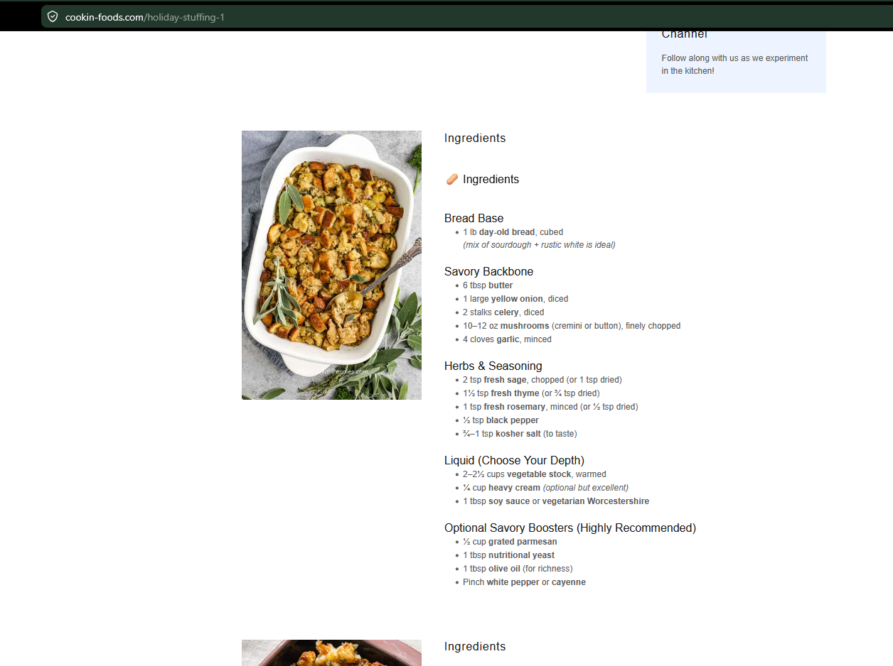

Holiday Stuffing
Savory vegetarian holiday stuffing with mushrooms, herbs, bread, broth, and cream.
Ingredients
Bread Base
- 1 lb day-old bread, cubed
Savory Backbone
- 6 tbsp butter
- 1 large yellow onion, diced
- 2 celery stalks, diced
- 10–12 oz mushrooms, finely chopped
- 4 garlic cloves, minced
Herbs and Seasoning
- 2 tsp fresh sage, chopped
- 1½ tsp fresh thyme
- 1 tsp fresh rosemary, minced
- ½ tsp black pepper
- ¾–1 tsp kosher salt
Liquid
- 2–2½ cups warm vegetable stock
- ¼ cup heavy cream, optional
- 1 tbsp soy sauce or vegetarian Worcestershire
Optional Boosters
- ½ cup grated parmesan
- 1 tbsp nutritional yeast
- 1 tbsp olive oil
- Pinch white pepper or cayenne
Instructions
Dry the bread
Spread bread cubes on baking sheets and bake at 300°F for 20–30 minutes, until dry but not browned.
Build the flavor base
Melt butter over medium heat. Add onion and celery and cook slowly until very soft. Add mushrooms and cook until their moisture evaporates and they begin to brown. Add garlic and herbs and cook 30 seconds. Season with salt and pepper. Do not rush this step; it replaces the meat flavor.
Assemble
Combine dried bread and mushroom mixture in a large bowl. Stir in parmesan and nutritional yeast if using. Whisk warm stock, cream, and soy sauce or Worcestershire. Pour gradually over bread, tossing gently, until moist but not soupy.
Bake
Transfer to a buttered dish. Cover with foil and bake at 375°F for 25 minutes. Uncover and bake another 20–25 minutes until the top is golden and crisp.
Notes
- Savory variations: add green onion and extra black pepper for Southern-style, whisk 1 tsp miso into the stock for deeper umami, dot the top with butter before the final bake, or add extra parmesan during the last 10 minutes.
- Make ahead: assemble up to 1 day ahead, cover, and refrigerate. Bake from cold, adding 10–15 minutes, and crisp uncovered at the end.
- Serving tip: serve under roasted vegetables, with gravy, or fried into leftover patties the next day.